30 jun 2025 · Fotos exclusivas de la casa
El cerco: la familia primero
José Adolfo Macías Villamar, Fito, salió de la cárcel Regional de Guayaquil en enero de 2024. La versión oficial fija la fuga el 7 de enero; Boscán sostiene que el Estado se dio cuenta casi quince días tarde y que, según fuentes policiales, se fue en Navidad. Desde entonces el Gobierno de Daniel Noboa lo buscó sin resultado: alertas de Interpol, líneas reservadas y, en marzo de 2025, una recompensa de un millón de dólares y una instrucción fiscal por evasión. Muchos lo daban fuera del país. Boscán presumía lo contrario: Fito se quedó en Manabí, la zona que controlaba como nadie, y desde allí, en al menos tres oportunidades, le ofreció un pacto al Gobierno.
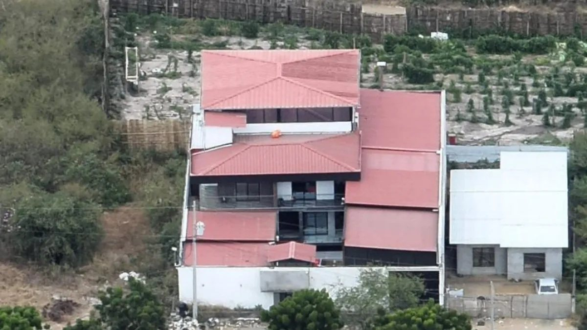
La primera pista fue la familia. En enero de 2024 su esposa, Inda Peñarrieta, y sus hijos se instalaron en una casa de 300.000 dólares frente al lago San Roque, en Córdoba, Argentina; ella publicó en Facebook fotos geoetiquetadas y la fuerza antinarcóticos argentina los detuvo y los expulsó. Entregados al Ecuador, la Fiscalía de Diana Salazar los dejó en libertad, recordó Velásquez. A finales de 2024 la Policía detuvo por lavado de activos a Verónica Briones, la pareja sentimental de Fito y madre de su hija menor, mientras visitaba una casa en construcción en el sector Monterrey, entre Manta y Montecristi, a nombre de Cristian Mendoza. Nadie sabía entonces que debajo había un búnker.
El 2 de junio de 2025 la Policía golpeó el primer anillo. En Manabí, Guayas y Pichincha detuvo a Yandry Nicomedes Macías Villamar, hermano de Fito; a un cuñado; a los padres y a un hermano de Briones, e incautó 26 vehículos y 47 inmuebles valorados en 12 millones de dólares. Boscán contó que la investigación llevaba más de un año congelada en la unidad de delitos financieros y que el fiscal subrogante Wilson Toainga la desempolvó; un informe de la UAFE de por lo menos tres años antes ya decía por dónde se movía la plata: no la esposa, sino la pareja sentimental y el círculo del hermano. Al día siguiente sumó lo que constaba en informes de inteligencia desde 2021: las empresas del círculo familiar, Iris, de limpieza y alimentación; Homabi, de carga pesada, y Queen Water, de hielo y agua, fueron proveedoras del Estado entre 2021 y 2023. El caso Blanqueo Fito habla de 37 millones de dólares lavados, sobre todo en los últimos cinco años, casas y vehículos por 13 millones y cuentas que movieron 24 millones.
26 y 47vehículos e inmuebles incautados al círculo familiar el 2 de junio de 2025, por 12 millones de dólares
$ 37 Mblanqueados por la estructura financiera de Fito, según el caso Blanqueo Fito
Con la familia presa, Fito buscó al Gobierno. Según las fuentes de inteligencia de Boscán, tres veces: primero por Claudia Garzón, exintegrante de la comisión de pacificación que creó Guillermo Lasso, luego salpicada en el caso Metástasis; después por un mayor de Policía que había participado en la liberación de su hija, secuestrada dos años antes; por último, a través de policías de Manta, unos dos meses antes de la captura. Las pretensiones bajaron con cada intento: no ser extraditado, recuperar sus bienes, dejar a su familia fuera y no tener consecuencias; al final, solo que respetaran su vida. El Gobierno dijo que no las tres veces. Y hubo una videollamada: a inicios de mayo de 2025, unos veinte minutos, entre Fito y el ministro del Interior, John Reimberg. El ministro la negó primero y la admitió el 1 de julio.
Estaban buscando hablar conmigo y yo le había mandado a decir que no quería pagar cárcel en Ecuador, sino que quería irme a Estados Unidos. Hicimos una videollamada, yo lo vi a él y él me vio a mí.
Audio atribuido a Fito, difundido por Noticias Uno de Colombia y reproducido en Café La Posta, 30 de junio de 2025
La cuarta vía fue Colombia. El 9 de junio de 2025 la Cancillería colombiana recibió, a través de su embajadora en Quito, María Antonia Velasco, y de la viceministra Rosa Yolanda Villavicencio, una comunicación atribuida a Fito, escrita de puño y letra, en la que pedía que Colombia fuera garante de su entrega para evitar la extradición a Estados Unidos. Según el reporte de Noticias Uno, la negociación empezó a principios de junio, tras la captura de sus familiares: Fito temía que los llevaran a La Roca, controlada por Los Lobos, y ofreció entregarse a cambio de que le devolvieran algunos bienes y trasladaran a los suyos a la Regional, que controlan Los Choneros. El 4 de junio sus abogados se reunieron con un asesor designado por Reimberg; dijeron tener información de que la idea del Gobierno era enviarlo al centro de confinamiento de El Salvador o asesinarlo, y por eso pedían un garante. Los chats publicados muestran al intermediario escribiendo a la embajadora, 'Doctora, es urgente. Carta de alias Fito pidiendo a Colombia como garante de su entrega', y a ella pasándole el número del vicecanciller. Diario La Hora añadió que Fito no confiaba en Reimberg y creía que el mejor camino era la Fiscalía de Toainga, rápido, antes de que el CPCCS designara a un nuevo fiscal.
En dicha tarea no habrá presencia policial ni militar, tampoco el uso de armas de ninguna índole. En todo momento se respetará mi vida y la de quienes me rodeen.
Carta atribuida a Fito a la embajadora de Colombia, leída en el reporte de Noticias Uno reproducido en Café La Posta, 30 de junio de 2025
La cobertura
Nueve piezas
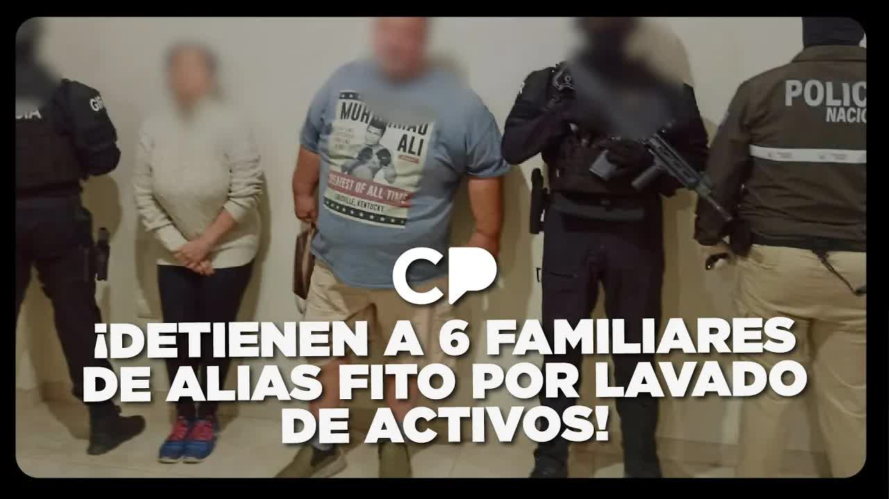
Pieza 012 jun 2025 · 1:56:00
El primer anillo
Operativo simultáneo en Manabí, Guayas y Pichincha contra la familia de Fito: un hermano, un cuñado, los suegros; 26 vehículos y 47 inmuebles por 12 millones de dólares. Una investigación que llevaba más de un año congelada.
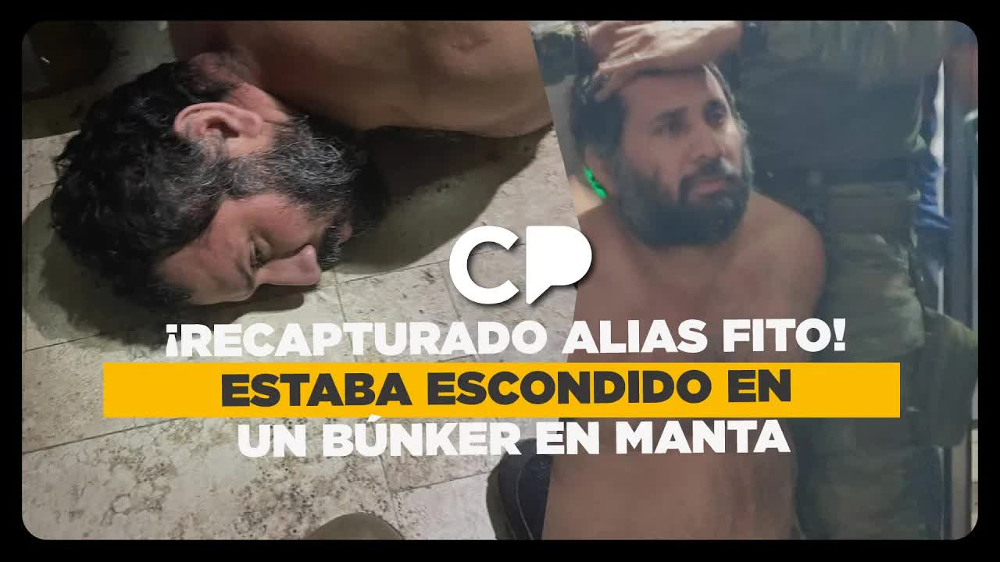
Pieza 0226 jun 2025 · 2:21:13
La recaptura
Quién es Fito, de Ecuavóley en el barrio 15 de Septiembre a la fuga de La Roca y al búnker. Los tres pactos que ofreció al Gobierno, la rueda de prensa de Reimberg y Loffredo y la lista de lo que Fito podría contar en Estados Unidos.
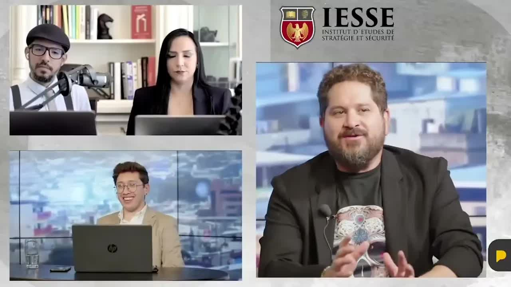
Pieza 0330 jun 2025 · 27:12
La casa
Fotos exclusivas de los allanamientos: la cocina, las medicinas, el dinosaurio, el cochecito, las puertas blindadas y la piscina que desaparecía de los drones. Por qué la Policía volvía una y otra vez.
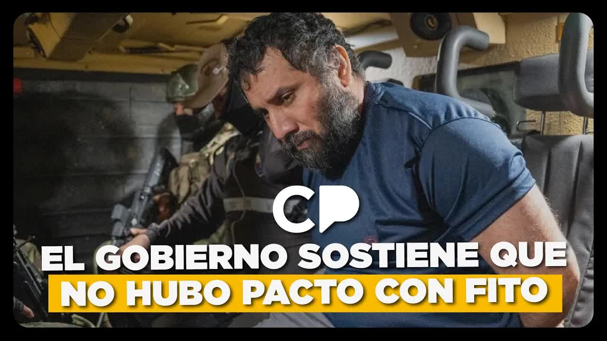
Pieza 0430 jun 2025 · 2:22:30
La negociación
Los hechos y los mitos de la captura: el pipón de la Agencia de Tránsito de Manta, la farmacia, las cuatro vías de negociación y el reporte de Noticias Uno que el ministro llamó mentira. La alcaldesa de Manta pide intervenir la empresa de movilidad.
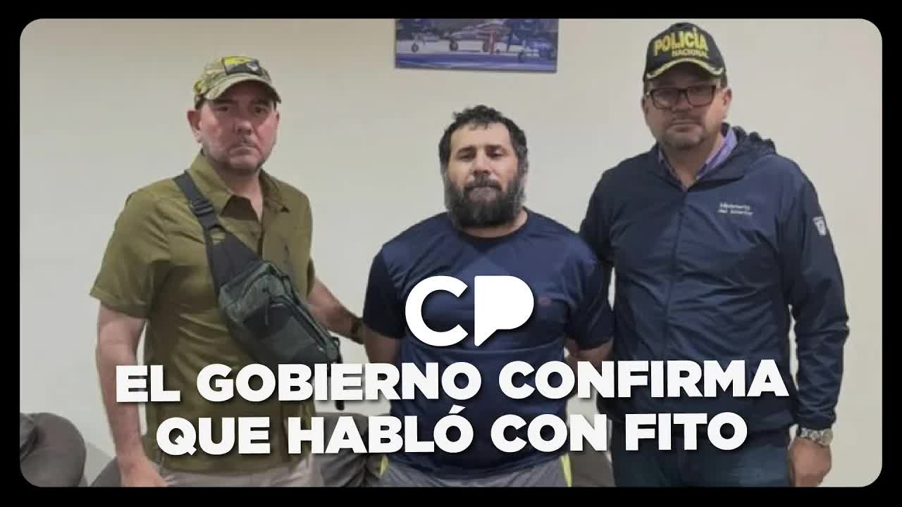
Pieza 051 jul 2025 · 2:32:10
La videollamada
Reimberg admite la videollamada de veinte minutos con Fito. El periodista de Noticias Uno les dice que la carta, los audios y los chats le llegaron de un alto funcionario ecuatoriano. Dónde se quedó Petro en Manta y quién quiso reunirse con quién.
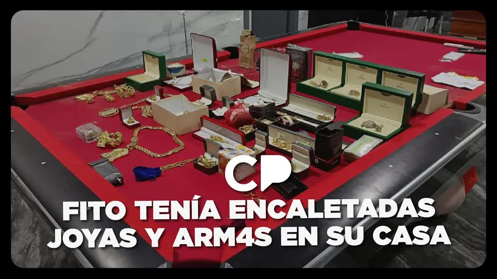
Pieza 063 jul 2025 · 2:29:00
La caleta
Retroexcavadoras en el patio de Monterrey: armas, municiones, dinero, joyas y cuatro Rolex. Petro dice que no conoce a Fito. Fernando Carrión sobre el trofeo político y la cultura del lujo narco.
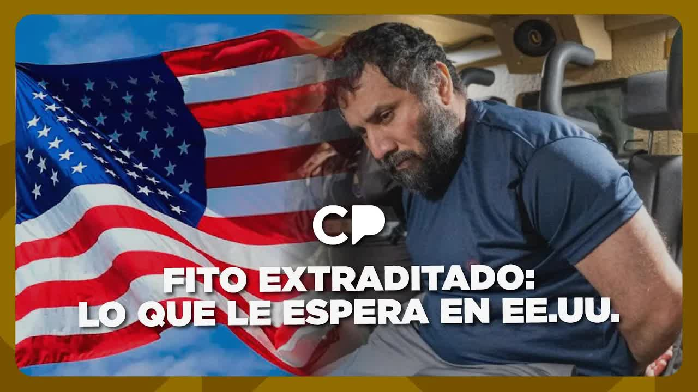
Pieza 0721 jul 2025 · 1:57:25
El avión
Fito ya está en Nueva York: los siete cargos, la promesa de no aplicar cadena perpetua ni pena de muerte y cómo se negocia la cooperación en la justicia estadounidense, explicado por Esteban Santos.
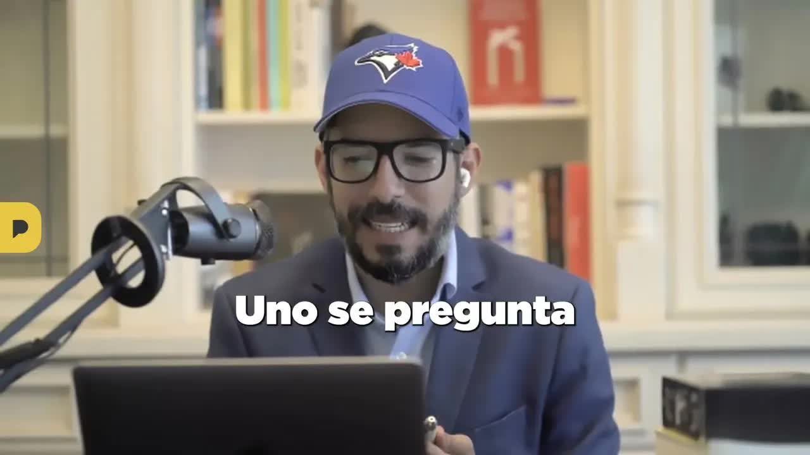
Pieza 0830 oct 2025 · 35:24
El sicario
El Prólogo de Boscán: alias La Muerte, gatillero principal de Fito, llama desde una cárcel de México. Mató por primera vez a los nueve años, se tatuó 72 cruces y describe la llamada que las víctimas recibían antes del disparo.
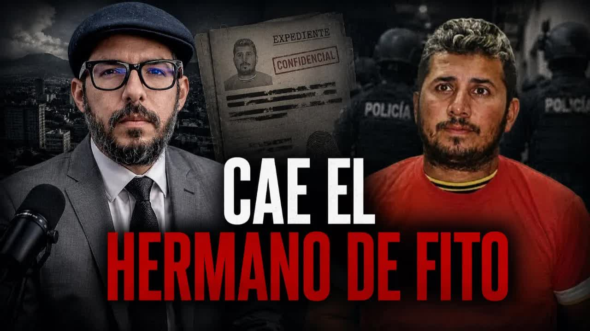
Pieza 0917 jun 2026 · 1:42:41
Los hermanos
Cae alias Javi en Colombia con identidad falsa, el último gran chonero activo. La lista de la línea de mando caída y la pelea de Reimberg con el Gobierno de Petro. Un mes después, el hermano David aparece fusilado en Olón.
El búnker de Monterrey
La Policía llegó a la casa por un funcionario que cobraba sin trabajar. Un informe de inteligencia de finales de 2024 identificó una red de pipones en el municipio de Manta: en la Agencia de Tránsito, Cristian Germán Mendoza Vélez y por lo menos otros siete cobraban sueldo y no iban a trabajar, todos vinculados a Los Choneros. Tránsito es un puesto clave para el narcotráfico: ve cuándo entra la Policía por las carreteras y coordina los levantamientos de droga y de armas. Mendoza no tenía antecedentes ni marcas de pertenencia a la banda y era el dueño de la casa de Monterrey. Al seguirlo, los agentes vieron que convivía con otros tres hombres y que uno de ellos, en mitad de un proceso judicial y obligado a presentarse cada quince días fuera de Manabí, paraba al regreso en una farmacia a comprar leche de fórmula y medicinas. No había niños en la casa. Las medicinas servían para la diabetes, el glaucoma y la hipertensión: las enfermedades de Fito.
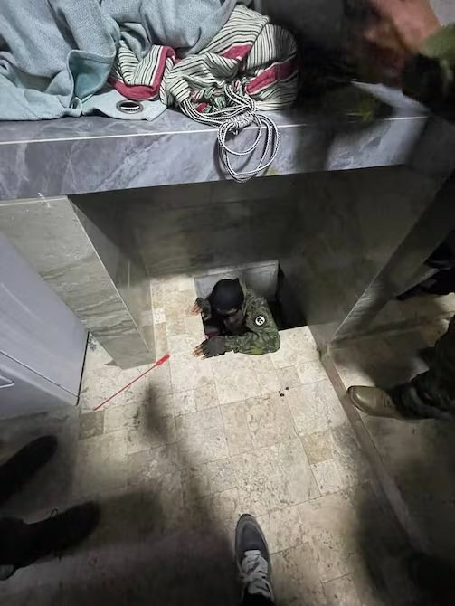
La casa estaba chequeada, como otras 27 propiedades del entorno. La Policía la había allanado al detener a Briones, volvió en febrero de 2025 y en marzo, y no encontró el escondite: ni el densitómetro que mide el espesor de las paredes lo mostró. Pero volvían por lo que veían: medicinas al fondo de una alacena, juguetes de niña, un dinosaurio de plástico igual al de las fotos de la hija de Fito con Briones, un cochecito rojo en el balcón, puertas blindadas en los dormitorios y una piscina con tobogán cuyo techo corredizo la hacía desaparecer de las tomas de los drones, una estrategia que Vivanco recordó de una casa del Chapo Guzmán. Velásquez lo resumió en 2026: la propiedad fue allanada seis veces sin resultado, porque cada vez Fito bajaba al búnker y esperaba, hasta que los juguetes junto a la piscina dijeron que la hija estaba ahí y, probablemente, el padre.
El 25 de junio de 2025, a las cinco de la mañana, las Fuerzas Armadas entraron a la casa y cerraron quince cuadras a la redonda; unos 200 militares, en la operación bautizada Gran Fénix 23. Fuentes militares citadas en el programa hablaron de una llamada interceptada a su familia como punto de partida, la misma grieta que perdió a Pablo Escobar en 1993. Los ministros John Reimberg y Gian Carlo Loffredo volaron a Manta; en un sobrevuelo les llamó la atención un sembrío irregular detrás de la casa y pidieron maquinaria pesada. Velásquez contó que el operativo duró cerca de doce horas y que Fito solo salió cuando cortaron la energía eléctrica, se quedó sin ventilación y oyó las excavadoras sobre su cabeza: no lo encontró la Policía, se desesperó. Abrió la escotilla y arriba lo esperaban militares y policías. 'No soy como me pintan', le dijo a Loffredo. Ese mismo día Noboa, desde su gira, atribuyó la captura a las leyes de Solidaridad y de Inteligencia aprobadas dos semanas antes. Fito llegó a la base aérea Simón Bolívar de Guayaquil a las 21:15, paseado por los ministros ante las cámaras, y entró a La Roca, la cárcel a la que no quiso ir en enero de 2024 porque creía que allí lo matarían.
Cuando esto sucede, alias Fito entra en pánico, porque si seguíamos, el techo de su búnker se iba a venir abajo. En ese momento abre la escotilla, donde ya se encontraba personal militar y policial, y sale del hueco en el que se encontraba.
John Reimberg, ministro del Interior, rueda de prensa en Carondelet transmitida por Café La Posta, 26 de junio de 2025
Con él cayeron cuatro custodios: Carlos Cedeño, Cristian Mendoza, Freddy Zambrano y Eduardo Hurtado. Solo uno constaba como miembro conocido de Los Choneros; Boscán lo leyó como una cápsula mínima para evitar filtraciones, con un millón de dólares de recompensa en juego. Fuentes de inteligencia que no participaron en el operativo se preguntaban, en cambio, por qué el hombre más buscado del país tenía una sola arma con una sola bala y sus guardaespaldas, cinturones negros de jiu-jitsu, no llevaban armas; no descartaban que a Fito lo hubieran engañado con la promesa de una reunión. Boscán también matizó la épica oficial: la captura fue obra de la ULCO, la unidad policial que llevaba meses tras Fito y que viajó a Estados Unidos con la DEA y Homeland Security para preparar tres casos, y se atribuyó a las Fuerzas Armadas porque necesitaban un salvavidas después de dejar salir caminando a alias Fede de la Penitenciaría.
La casa, que el programa mostró en fotos exclusivas el 30 de junio, estaba en plena construcción con acabados de lujo: área de parrilla, cocina, un decantador de vino, sala de billar, gimnasio, la piscina con tobogán. El búnker, bajo una baldosa que se movía, tenía aire acondicionado, ventilador, refrigeradora y una cama; los militares lo compararon con los de Israel, Siria o Palestina. Se recogieron seis teléfonos. El 2 de julio el bloque de seguridad volvió con retroexcavadoras al patio, seis o siete veces más grande que la casa, y desenterró una caleta: armas de fuego, municiones, dinero en efectivo, joyas y cuatro relojes Rolex de entre 20.000 y 35.000 dólares cada uno. Un coleccionista le explicó alguna vez a Boscán para qué sirven: con tres relojes en las muñecas se cruza un aeropuerto con un millón y medio de dólares. Antes de la captura, la Policía había entrado a la celda de Briones y hallado documentos y un dispositivo electrónico sobre cómo se mezclaba el dinero de la droga con el de los negocios lícitos en una red de empresas fantasma.
El escondite
El corte de la casa
Corte AACasa en construcción · Monterrey, entre Manta y MontecristiSin escala
Nivel del patio
01Maquinaria pesada
03Dormitorios
Dormitorio
Dormitorio
Puerta blindada04Balcón
05Techo corredizo
02Sembrío irregular
06Planta baja
- Área de parrilla
- Cocina
- Decantador de vino
- Sala de billar
- Gimnasio
07Alacena
08La baldosa
Piscina con tobogán
11La caleta
- Armas de fuego
- Municiones
- Dinero en efectivo
- Joyas
- 4 Rolex de 20.000 a 35.000 dólares
09La bajada
10El búnker
- Cama
- Aire acondicionado
- Ventilador
- Refrigeradora
Desliza el corte para verlo completo.
6 vecesel patio, frente a la casa6allanamientos sin resultado12 hduró el operativo del 25 de junio6teléfonos recogidos
- 01
Por donde entró la retroexcavadora
En un sobrevuelo de la mañana del 25 de junio de 2025, a los ministros Reimberg y Loffredo les llamó la atención un sembrío irregular detrás de la casa y pidieron maquinaria pesada. A la hora 12 cortaron la energía eléctrica y las excavadoras empezaron a cavar sobre el búnker.
- 02
El sembrío que no cuadraba
Detrás de la casa, en un patio seis o siete veces más grande que la construcción. Fue lo que se vio desde el aire y lo que decidió el uso de las excavadoras.
- 03
Puertas blindadas en los dormitorios
La Policía las vio en los allanamientos de febrero y marzo de 2025 y volvió por eso: una casa en obra con las puertas de los cuartos blindadas.
- 04
El cochecito rojo del balcón
En la casa no había niños. En el balcón había un cochecito rojo, y adentro juguetes de niña y un dinosaurio de plástico igual al de las fotos de la hija de Fito con Verónica Briones.
- 05
La piscina que desaparecía
Una piscina con tobogán bajo un techo corredizo: cerrado, la piscina no salía en las tomas de los drones. Vivanco recordó la misma estrategia en una casa del Chapo Guzmán. Los juguetes junto a la piscina dijeron que la hija estaba ahí y, probablemente, el padre.
- 06
Acabados de lujo en una casa a medio hacer
Lo que el programa mostró en fotos exclusivas el 30 de junio de 2025.
- 07
Las medicinas al fondo de la alacena
Para la diabetes, el glaucoma y la hipertensión: las enfermedades de Fito. Uno de los hombres de la casa las compraba junto con leche de fórmula en una farmacia, al regreso de presentarse cada quince días fuera de Manabí.
- 08
Una baldosa que se movía
Bajo ella, la escotilla. Ni el densitómetro que mide el espesor de las paredes mostró el escondite: la propiedad fue allanada seis veces sin resultado.
- 09
Por aquí bajaba
Cada vez que la Policía entraba a la casa, Fito bajaba al búnker y esperaba. El 25 de junio de 2025 subió por la escotilla y arriba lo esperaban militares y policías.
- 10
El hueco donde vivía el hombre más buscado
Los militares que lo abrieron lo compararon con los búnkeres de Israel, Siria o Palestina. Cuando cortaron la luz se quedó sin ventilación y oyó las excavadoras sobre su cabeza. Se recogieron seis teléfonos.
- 11
Lo que estaba enterrado en el patio
El 2 de julio de 2025 el bloque de seguridad volvió con retroexcavadoras y desenterró la caleta. Un coleccionista le explicó alguna vez a Boscán para qué sirven los relojes: con tres en las muñecas se cruza un aeropuerto con un millón y medio de dólares.
Reconstrucción con lo que consta en el expediente: los tres allanamientos previos, las fotos exclusivas del 30 de junio de 2025 y lo que el bloque de seguridad desenterró el 2 de julio. No hay planos oficiales del escondite.
12 horasduró el operativo del 25 de junio según Velásquez; la versión oficial habla de más de diez
27propiedades del entorno de Fito tenía chequeadas la Policía, además de la casa de Monterrey
Hora a hora
El parte del operativo
Parte de novedadesOperación Gran Fénix 23CercoNegociaciónBúnkerExtradición
HoraUnidadNovedad
- Fines 2024Inteligencia policial
Un informe identifica una red de pipones en la Agencia de Tránsito de Manta; Cristian Mendoza, dueño de una casa en construcción en Monterrey, entre ellos. Verónica Briones cae por lavado de activos al visitar esa casa.
- Feb – mar 2025Policía Nacional
Dos allanamientos más a la casa, con densitómetro. No aparece el búnker; sí medicinas para diabetes y glaucoma, juguetes de niña y un cochecito rojo.
- Inicios may 202520 minMinisterio del Interior
Videollamada de unos veinte minutos entre Fito y el ministro John Reimberg. Fito pide condiciones para entregarse; el Gobierno las niega. El ministro la negará y la admitirá el 1 de julio.
- 2 jun 2025Policía · Fiscalía
Cae el primer anillo en Manabí, Guayas y Pichincha: un hermano, un cuñado y los suegros; 26 vehículos y 47 inmuebles por 12 millones de dólares.
- 4 jun 2025Abogados de Fito · asesor de Reimberg
Reunión con un asesor designado por el ministro. Los abogados piden un garante: temen que el destino sea El Salvador o la muerte.
- 9 jun 2025Cancillería de Colombia
Carta de puño y letra atribuida a Fito llega a la embajadora María Antonia Velasco: pide a Colombia como garante de su entrega para evitar la extradición.
- 25 jun 202505:00Fuerzas Armadas · Gran Fénix 23
Unos 200 militares entran a la casa de Monterrey y cierran quince cuadras a la redonda. Punto de partida: una llamada interceptada a la familia.
- 25 jun 2025MañanaMinistros Reimberg y Loffredo
Vuelan a Manta. En un sobrevuelo les llama la atención un sembrío irregular detrás de la casa y piden maquinaria pesada.
- 25 jun 2025Hora 12Bloque de seguridad
Cortan la energía eléctrica; las excavadoras cavan sobre el búnker. Sin ventilación, Fito abre la escotilla. Arriba lo esperan militares y policías. Cuatro custodios detenidos.
- 25 jun 202521:15Base aérea Simón Bolívar · Guayaquil
Fito llega paseado por los ministros ante las cámaras y entra a La Roca, la cárcel a la que no quiso ir en enero de 2024.
- 26 jun 2025Carondelet
Rueda de prensa de Reimberg y Loffredo: el pipón de tránsito, la farmacia, el búnker. En Nueva York, un abogado penalista se presenta por Fito.
- 1 jul 2025Ministerio del Interior
Reimberg admite la videollamada de mayo. Las versiones oficiales de la captura cambiaron cinco veces en una semana.
- 2 jul 2025Bloque de seguridad · retroexcavadoras
La caleta del patio: armas, municiones, dinero, joyas y cuatro Rolex de entre 20.000 y 35.000 dólares cada uno.
- 20 jul 202514:00Departamento de Justicia de EE. UU.
Un avión sale de Guayaquil con Fito y aterriza en Nueva York cerca de las ocho de la noche. Noboa: "Hasta nunca, Fito".
- 21 jul 2025Tribunal federal de Brooklyn
Con traductor, se declara no culpable de siete cargos. Sin fianza: dos fugas y nexos con el cartel de Sinaloa.
Fin del parteExtraditado el 20 de julio de 2025 · no culpable en Brooklyn
Pacto o trofeo
La recaptura fue el mayor golpe del Gobierno en materia de seguridad y, según Boscán, salvó los cargos de Reimberg y Loffredo, en la cuerda floja semanas antes. Duró poco intacta. El fin de semana siguiente, Noticias Uno de Colombia publicó que Fito mismo le dio al ministro la dirección para una reunión el 25 de junio y que, en lugar del ministro, llegó la Policía antiterrorista. Reimberg respondió en X: 'Canal 1 de Colombia miente', Fito no se entregó, no hubo pacto ni participó Colombia, la operación fue cien por ciento ecuatoriana. Boscán pidió precisión: ¿miente en la carta? No, la carta existe. ¿En que la recibió la embajadora? Tampoco. ¿En que hubo un delegado y una videollamada? Eso el ministro no lo había dicho. El 1 de julio, en el programa de Jimmy Jairala, Reimberg admitió la videollamada de veinte minutos de inicios de mayo: Fito pidió cosas, todo fue negado, y después de esa llamada él mismo lideró los operativos para quitarle bienes y empresas y detener a su familia. En una semana las versiones oficiales cambiaron cinco veces: las leyes, una llamada al 131, la niña que dijo dónde estaba su papá, el agente de tránsito, las medicinas. Fuentes policiales, contó Velásquez, estaban molestas porque el ministro habló de la niña cuando se había acordado no hacerlo.
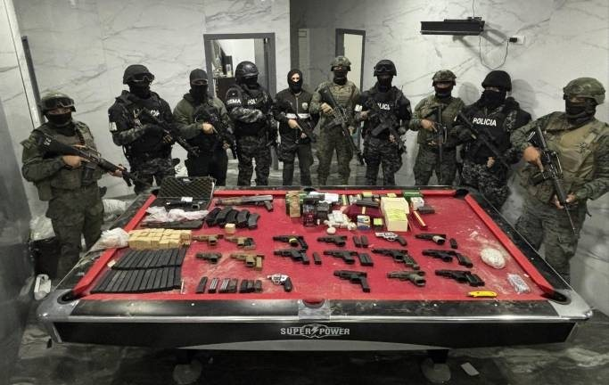
EvidenciaNegociar es una cosa, recibir una propuesta de negociación es otra. Pactar con Fito hubiera sido llegar a un acuerdo, simular la captura. Eso es muy grave. Otra cosa es que Fito haya querido negociar. Esto se acaba el día que lo extraditan.
Andersson Boscán, 30 de junio de 2025
La Cancillería colombiana admitió haber recibido la comunicación el 9 de junio, dijo que su autenticidad no estaba comprobada y que no actúa como garante de narcotraficantes; la embajadora negó haber recibido carta alguna. Gustavo Petro escribió que no conoce a Fito. El presidente colombiano había estado en Manta después de la posesión de Noboa, el 24 de mayo, y una columna de El Tiempo lo ubicó en una mansión de un familiar de Fito. Velásquez y el equipo lo desmintieron con datos: Petro se alojó en Santa Marianita, en una casa de playa de alquiler de un empresario quiteño sin vínculo con la política, rodeada de policías y militares ecuatorianos que en realidad le montaron inteligencia por temor a un contacto con la gente de Fito. Sí hubo, según la reportería de Velásquez, delegados y abogados de Fito que pidieron una reunión con Petro, incluso con un viaje a Colombia; la reunión no se produjo. Boscán recordó que Fito buscó a la embajada colombiana y no a la estadounidense por una razón: sabía a quién podía abrirle la puerta. Y el periodista de Noticias Uno les dijo, en dos llamadas, que la carta física, los audios y los chats le llegaron de un alto funcionario del Gobierno ecuatoriano.
Ese ministro no me inspira nada de confianza. No es una persona preparada como para llegar a términos coherentes, y porque yo ya tuve conversa con él.
Audio atribuido a Fito sobre John Reimberg, difundido por Noticias Uno y reproducido en Café La Posta, 2 de julio de 2025
Del expediente salió otra consecuencia. El 30 de junio la alcaldesa de Manta, Marciana Valdivieso, pidió al Gobierno intervenir la Empresa Pública de Movilidad: uno de sus funcionarios, con más de trece años en la nómina, era parte del anillo de Fito, y la institución acumulaba agresiones, amenazas, bombas, muertes y ausencias sistemáticas. Boscán contó lo que le dijo el alcalde Intriago, hoy difunto: una de las primeras llamadas que recibe un alcalde de Manta, el mismo día de la elección, es la de Fito, para avisarle quién manda. Y preguntó qué haría el Estado con los otros funcionarios de tránsito plenamente identificados por la Comandancia, el Ministerio del Interior y la Inteligencia. En Esmeraldas lo hacen los Tiguerones y en El Oro otras bandas: las agencias de tránsito son la primera línea que avisa cuándo viene la Policía, y por eso hay tantos agentes asesinados.
Brooklyn: el primer extraditado
Fito tenía abogado en Nueva York desde el 26 de junio, al día siguiente de la captura: un penalista conocido por defender a capos colombianos, entre ellos alias Chupeta, del cartel del Norte del Valle. La Fiscalía del Distrito Este de Nueva York lo acusaba desde abril de 2024 con siete cargos: conspiración para la distribución internacional de cocaína, distribución de cocaína en dos envíos de unos 1.100 y 800 kilos, uso de armas de fuego en el tráfico de drogas, contrabando de armas desde Estados Unidos y conspiración para la compra fraudulenta de armas. Boscán había dicho el 26 de junio que la única forma de saber si hubo pacto se llamaba extradición. Reimberg prometió que sería antes de diciembre. Fue en 25 días: Fito aceptó la extradición ante el presidente de la Corte Nacional, José Suing, en cuestión de segundos, según el internacionalista Esteban Santos, y Estados Unidos se comprometió por escrito a no imponerle cadena perpetua ni pena de muerte. El domingo 20 de julio de 2025 un avión del Departamento de Justicia salió de Guayaquil a las dos de la tarde y aterrizó en Nueva York cerca de las ocho de la noche, sin anuncio oficial hasta el tuit de Noboa: 'Hasta nunca, Fito'. El 21 de julio, ante un tribunal federal de Brooklyn y con traductor, se declaró no culpable; el fiscal pidió que no hubiera fianza por su peligrosidad, sus dos fugas y sus nexos con el cartel de Sinaloa.
16.647días de vida tenía Fito el 27 de junio de 2025; 5.772 los pasó en prisión, uno de cada tres
Lo que sigue es lo que Boscán enumeró el día de la recaptura: qué contará y a quién expondrá. Quiénes le ayudaron a llegar al despacho más alto de la Fiscalía y le ofrecieron protección a una familia que nunca fue procesada; los generales activos y pasivos de la Policía que le rendían pleitesía por un pago mensual, algunos entregados en avioneta en Samborondón, y que hicieron operativos contra Los Lobos para dejarle libres los puertos; los ministros con los que sí pactó privilegios en las cárceles a cambio de bajar la calentura en la calle; los funcionarios que le pidieron ayuda para recapturar fugados; las campañas a alcaldías, prefecturas y cargos nacionales que financió; quién, en el gobierno de Lasso, le abrió el dinero público para que sus empresas fueran proveedoras del Estado; quién lo ayudó a fugarse en 2024, en una fuga que la exfiscal Salazar se negó a investigar; los militares que custodian la droga que entra por la frontera norte; las facilidades de los principales bancos para mover 30 millones de dólares en sus cuentas y las de su familia. Y, sobre todo, que no es el gran capo del Ecuador: los hay más grandes, más violentos y más silenciosos. En Estados Unidos, explicó Santos, la cooperación se negocia sobre la mesa y a cambio de pruebas: rutas, operadores, bancos, autoridades. Velásquez sostuvo que hubo algún tipo de conversación o acuerdo, con varias embajadas al tanto, y que por ahora la extradición fue un premio: en una cárcel federal Fito tiene muchas menos posibilidades de morir que en La Roca.
Hay una sola forma de entender si hubo o no un pacto y eso se llama extradición. Si Fito termina subido en un avión con destino a los Estados Unidos, ahí se acaba la historia.
Andersson Boscán, 26 y 30 de junio de 2025
Lo que quedó después
En octubre de 2025, desde Canadá, Boscán publicó en El Prólogo cinco entregas sobre alias La Muerte, el gatillero principal de Fito, que lo llamó por WhatsApp desde una cárcel de México mientras cocinaba una pasta un domingo. Mató por primera vez a los nueve años, a dos niños que le robaban el pan en la escuela, en la 17 y Gómez Rendón, en el suroeste de Guayaquil, por veinte dólares que nunca cobró; dejó de tatuarse a sus víctimas después de la cruz número 72. Lo reclutó el cuñado de alias Fede en Bastión Popular, se presentó a Fito, entonces número dos de Rasquiña, por videollamada, y lo mandaron a una escuela de sicarios en Sucumbíos dirigida por alias Lalo, donde militares activos y pasivos entrenaban durante mes y medio a muchachos convencidos de que eran guerrilleros; la graduación exigía morder el corazón de un cadáver. Describió el oficio: 17 o 18 días de seguimiento, la dirección sacada de la planilla de la luz o del agua, y por eso los narcos ponen gente en CNEL, en las empresas de agua y en las agencias de tránsito; los videos de los hijos subiendo al expreso escolar; la llamada previa que Fito exigía para que la víctima supiera quién y por qué. Entró vestido de policía con seis hombres a un centro de salud de Santo Domingo a rematar a un herido custodiado, y vestido de guía a la Regional para cuidar a Fito. Cobró hasta 50.000 dólares por un trabajo, por alguien famoso. Salió de Manta con lo que creía un cargamento de dos toneladas y la Armada mexicana lo abordó antes de Chiapas: eran 100 kilos, una falsa bandera para deshacerse de él. Llamó, dijo, para que se cuente que nada de eso vale la pena.
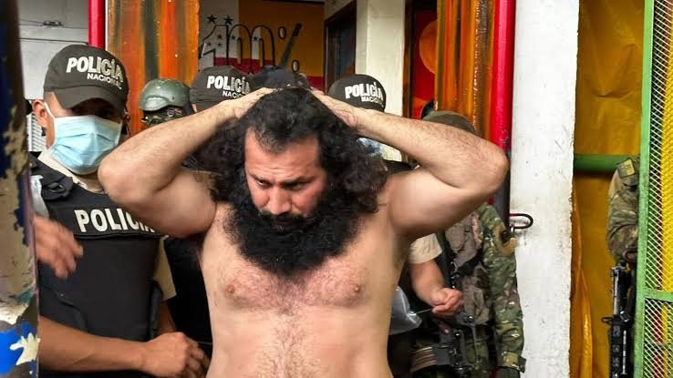
Tengo ubicada a tu mujer y tengo ubicado a tu hijo. En el momento que estoy diciendo eso, estoy tan cerca de ti que no te vuelves. Es un protocolo que hay que seguir, como lo pide el cliente.
Alias La Muerte, gatillero de Fito, recreando la llamada previa a un asesinato, El Prólogo de Boscán, 30 de octubre de 2025
La estructura siguió cayendo. En mayo de 2026 Velásquez puso a Fito en la serie de los capos que cayeron por amor: Escobar por la llamada de cumpleaños a su hijo, El Chapo por una actriz, Fito por los juguetes junto a la piscina. El 16 de junio de 2026 cayó en Colombia, con identidad y documentos colombianos falsos y notificación roja de Interpol, Ronald Javier Macías Villamar, alias Javi, hermano menor de Fito, condenado a doce años por homicidio y liberado en 2018 cuando el máximo tribunal dejó insubsistentes sus recursos; para la Policía antinarcóticos era el último gran chonero activo. El bloque de búsqueda ecuatoriano lo ubicó y las autoridades colombianas lo detuvieron; Reimberg acusó en Caracol al Gobierno colombiano de haberse negado a entregarlo hasta que llegó la notificación roja. Boscán reconstruyó la lista: Celso y Fede presos a la espera de extradición, Topo con extradición ordenada, Yandry detenido, un hermano sentenciado en 2026 a diez años por lavado de activos; de la generación que heredó a Rasquiña solo quedaba libre un hijo de Fito. Menos de un mes después, la madrugada del 12 de julio de 2026, David Macías Villamar, un hermano al que la banda nunca dejó entrar al mando y que armaba gente en Puerto López, fue fusilado en la urbanización Altos de Olón, en Manglaralto: 40 vainas percutidas, 30 de 9 milímetros y 10 de 5,56, según el parte policial. En 2021 la Fiscalía le había archivado una investigación previa. Los Choneros, 30.000 o 40.000 personas, seguían funcionando con el mando desbaratado, siete u ocho bajas en diez meses, mientras Los Lobos, ya la primera estructura del país, y un capo al que la Policía llama Loco Ovidio se disputaban las zonas que fueron suyas.
72cruces tatuadas por alias La Muerte antes de dejar de contar a sus víctimas
40vainas percutidas junto al cuerpo de David Macías Villamar en Olón, 12 de julio de 2026
Los Choneros después de Fito
La cadena de mando
Los Choneros
José Adolfo Macías Villamar, Fito
Heredó la banda tras la muerte de JL en diciembre de 2020, junto a Junior Roldán. Preso desde 2011, fugado de La Roca en 2013 y de la Regional en 2024. Recapturado el 25 de junio de 2025 y extraditado el 20 de julio de 2025; se declaró no culpable en Brooklyn.
- Los Choneros
Ronald Javier Macías Villamar, Javi
Hermano menor, criminal de larga data y hombre de la confianza absoluta de Fito. Condenado a doce años por homicidio y liberado en 2018 cuando el máximo tribunal dejó insubsistentes sus recursos. Capturado en Colombia el 16 de junio de 2026 con documentos colombianos falsos.
- Los Choneros
Alias Celso
Señalado en junio de 2025 como aspirante al mando, con dominio en el puerto de El Oro y minas del sur del país. Para junio de 2026, preso a la espera de extradición.
- Las Águilas
Alias Fede
Número dos de Los Choneros. Se fue caminando de la Penitenciaría del Litoral en junio de 2025, días antes de la recaptura de Fito; capturado después, en posibilidad de ser extraditado.
- Círculo familiar
Yandry Nicomedes Macías Villamar
Hermano. Detenido en Quito el 2 de junio de 2025 en el operativo por lavado de activos contra el primer anillo de Fito.
- Círculo familiar
David Macías Villamar
Hermano al que la banda nunca dejó entrar en el mando. Armaba gente en Puerto López. Asesinado en Olón la madrugada del 12 de julio de 2026, cuando intentaba reclamar el liderazgo.
- Los Choneros
Dani Villa, Toñito y Carlos Cornejo
Candidatos internos que la Policía mapeó tras la captura: Dani Villa sobrevivió a un atentado junto a Toñito, sobrino de Fito; de Cornejo no había identidad confirmada.
- Familia
Adolfo Macías Junior, Adolfito
Hijo de Fito. En 2025 la Policía lo consideraba un sucesor poco probable; en junio de 2026 Boscán lo señaló como el único de esa línea de mando que quedaba libre.
2024 → 2026
De la fuga a Brooklyn
- Ene 2024Fuga de la Regional; conflicto armado interno
- 2 jun 2025Cae el primer anillo: 26 autos, 47 inmuebles
- 25 jun 2025Recapturado en el búnker de Monterrey
- 1 jul 2025Reimberg admite la videollamada
- 20 jul 2025Extraditado; se declara no culpable en Brooklyn
- Pacto Gobierno-FitoSin prueba; la extradición se dio
- 16 jun 2026Cae alias Javi en Colombia
- 12 jul 2026Asesinan a David Macías Villamar en Olón
Actualizado el 5 de septiembre de 2026
Lo que falta
Preguntas sin responder
- Cuánto tiempo vivió Fito en el búnker de Monterrey y quién lo abastecía
- Qué se dijeron Fito y John Reimberg en los veinte minutos de videollamada de mayo de 2025
- Qué alto funcionario ecuatoriano entregó a Noticias Uno la carta, los audios y los chats
- Qué contó Fito a los fiscales de Brooklyn y a quién nombró
Cronología
Paso a paso
- 2011Preso por narcotráfico
Fito, de 32 años, entra a La Roca con los líderes de Los Choneros.
- 2013La fuga de La Roca
Sale por la puerta principal con otros 17, incluido JL; recapturado cinco meses después.
- 28 dic 2020Matan a JL
Fito hereda Los Choneros junto a Junior Roldán.
- Ene 2024Fuga de la Regional
Oficialmente el 7 de enero; el Estado tardó días en notarlo. Su familia es detenida en Córdoba, Argentina.
- Abr 2024Cargos en Brooklyn
Siete cargos federales por cocaína y armas; se hace pública la orden de detención.
- Fines 2024Briones cae en Monterrey
La pareja de Fito es detenida por lavado de activos al visitar la casa de Cristian Mendoza. Informe de inteligencia sobre pipones en Manta.
- Feb-mar 2025Allanamientos sin búnker
La Policía vuelve a la casa con densitómetro y no halla el escondite; sí medicinas y juguetes.
- Mar 2025Un millón de recompensa
El Ministerio del Interior eleva la recompensa y abre instrucción fiscal por evasión.
- Inicios may 2025La videollamada
Unos veinte minutos entre Fito y el ministro Reimberg. Fito pide condiciones; el Gobierno las niega.
- 24 may 2025Petro en Manta
Tras la posesión de Noboa, el presidente colombiano se aloja en Santa Marianita bajo vigilancia ecuatoriana.
- 2 jun 2025Cae el primer anillo
Detenidos un hermano, un cuñado y los suegros de Fito; 26 autos y 47 inmuebles por 12 millones.
- 9 jun 2025La carta a Colombia
La Cancillería colombiana recibe la comunicación atribuida a Fito que pide un garante.
- 25 jun 2025Gran Fénix 23
Desde las 5:00, unos 200 militares; excavadoras sobre el sembrío irregular; Fito sale por la escotilla. A La Roca a las 21:15.
- 26 jun 2025Rueda de prensa
Reimberg y Loffredo cuentan el pipón de tránsito y el búnker. Abogado neoyorquino se presenta en Brooklyn.
- 28-30 jun 2025Noticias Uno y las fotos
El canal colombiano publica la negociación; Reimberg lo llama mentira. La Posta muestra la casa en exclusiva.
- 1 jul 2025Reimberg admite la llamada
Confirma la videollamada de mayo. La Hora: Fito quiso negociar con la Fiscalía.
- 2 jul 2025La caleta
Armas, municiones, dinero, joyas y cuatro Rolex bajo el patio. Petro dice que no conoce a Fito.
- 20 jul 2025Extradición
Avión del Departamento de Justicia de EE. UU. sale de Guayaquil a las 14:00; llega a Nueva York en la noche.
- 21 jul 2025No culpable
Primera audiencia en Brooklyn; sin fianza.
- 30-31 oct 2025El sicario de Fito
Cinco entregas de El Prólogo sobre alias La Muerte, preso en México.
- 16 jun 2026Cae alias Javi
El hermano de Fito, detenido en Colombia con documentos falsos.
- 12 jul 2026Matan a David
El hermano de Fito es fusilado en Altos de Olón, Manglaralto.
Los nombres
Quién es quién

Extraditado el 20 de julio de 2025; no culpable en Brooklyn
José Adolfo Macías Villamar, Fito
Líder de Los Choneros. Fugado en 2013 y 2024; recapturado el 25 de junio de 2025.
JR
Negó el pacto; admitió la videollamada de mayo
John Reimberg
Ministro del Interior. Lideró el bloque de seguridad y los operativos contra los bienes y la familia de Fito.

En la cuerda floja semanas antes, según Boscán
Gian Carlo Loffredo
Ministro de Defensa. Recibió a Fito a la salida del búnker.
CG
Detenido con Fito
Cristian Germán Mendoza Vélez
Dueño de la casa de Monterrey; funcionario de la Agencia de Tránsito de Manta que cobraba sin trabajar.
CC
Detenidos el 25 de junio de 2025
Carlos Cedeño, Freddy Zambrano y Eduardo Hurtado
Custodios de Fito en la casa, junto a Mendoza. Uno solo constaba como chonero conocido.
VB
Presa por lavado de activos desde fines de 2024
Verónica Briones
Pareja sentimental de Fito y madre de su hija menor.
CG
Salpicada en el caso Metástasis
Claudia Garzón
Primera emisaria de Fito ante el Gobierno; exintegrante de la comisión de pacificación de Lasso.
MA
Negó haber recibido la carta
María Antonia Velasco
Embajadora de Colombia en Ecuador, destinataria de la carta de Fito.
GP
Dijo no conocer a Fito
Gustavo Petro
Presidente de Colombia. Estuvo en Manta en mayo de 2025; delegados de Fito buscaron reunirse con él.
WT
Fito quería negociar con él, según La Hora
Wilson Toainga
Fiscal general subrogante. Desempolvó el caso contra el círculo financiero de Fito.
MV
Pidió intervenir la Empresa Pública de Movilidad
Marciana Valdivieso
Alcaldesa de Manta.
RJ
Capturado en Colombia el 16 de junio de 2026
Ronald Javier Macías Villamar, Javi
Hermano de Fito, heredero de la estructura.
DM
Asesinado en Olón el 12 de julio de 2026
David Macías Villamar
Hermano de Fito; intentó reclamar el liderazgo.
AL
Preso en México
Alias La Muerte
Gatillero principal de Fito; 72 víctimas tatuadas.
Fotos vía Wikimedia Commons. José Adolfo Macías Villamar: Penitenciaría (CC BY-SA 4.0); Gian Carlo Loffredo: Michelleav89 (CC0).
La otra parte
Respuestas y reacciones
- John Reimberg, ministro del Interior
En X: 'Canal 1 de Colombia miente'. Fito no se entregó, no hubo pacto ni participación de Colombia; fue una operación cien por ciento ecuatoriana basada en inteligencia. El 1 de julio admitió una videollamada de unos veinte minutos a inicios de mayo, en la que Fito pidió condiciones para entregarse; todas fueron negadas, y después él lideró los operativos contra sus bienes, sus empresas y su familia. La recompensa nunca fue 'vivo o muerto'.
- Cancillería de Colombia
Recibió el 9 de junio, por la embajadora y la viceministra, una comunicación atribuida a Fito que pedía la intermediación de Colombia como garante de una entrega para evitar la extradición. Su autenticidad no fue comprobada y ninguna solicitud oficial llegó por canales diplomáticos. La Cancillería no actúa como garante de narcotraficantes.
- María Antonia Velasco, embajadora de Colombia
'A mí no me ha llegado ninguna carta, ningún trámite con esa carta, en absoluto'.
- Gustavo Petro, presidente de Colombia
En X: no conoce a Fito; la noticia es 'otra leivada'. Como todo presidente en el exterior, fue cuidado día y noche por la fuerza pública del país hermano.
- Daniel Noboa, presidente del Ecuador
Atribuyó la captura a las leyes de Solidaridad e Inteligencia, agradeció a policías y militares y anunció el pedido de extradición. El 20 de julio: 'Hasta nunca, Fito'.
- Fito, en audios difundidos por Noticias Uno y La Hora
Habló con el ministro por videollamada; había mandado a decir que no quería pagar cárcel en Ecuador sino irse a Estados Unidos. Reimberg no le inspira confianza. No conoce ningún cartel y no ha vendido droga en su vida.
- Marciana Valdivieso, alcaldesa de Manta
Pidió al Gobierno intervenir la Empresa Pública de Movilidad: el caso de su funcionario no es aislado sino un síntoma de una institución permeada por redes ajenas al servicio público, con agresiones, amenazas, bombas, muertes y ausencias sistemáticas.
Las piezas
Todos los videos
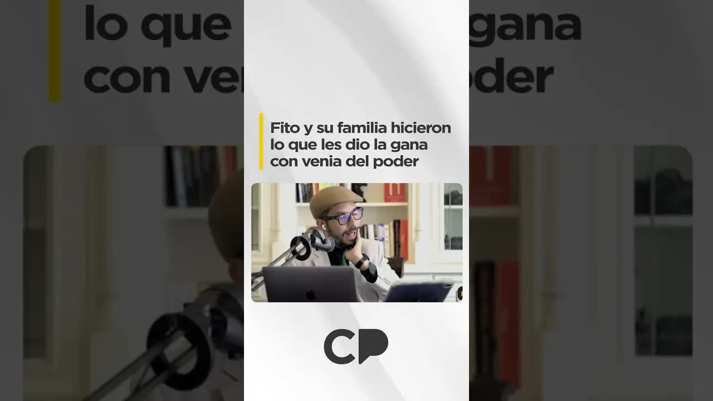
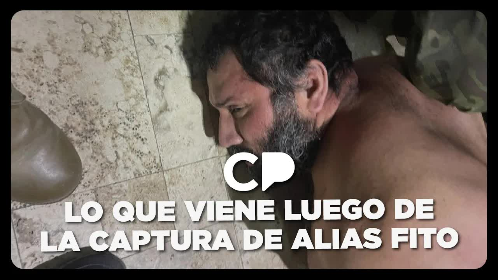
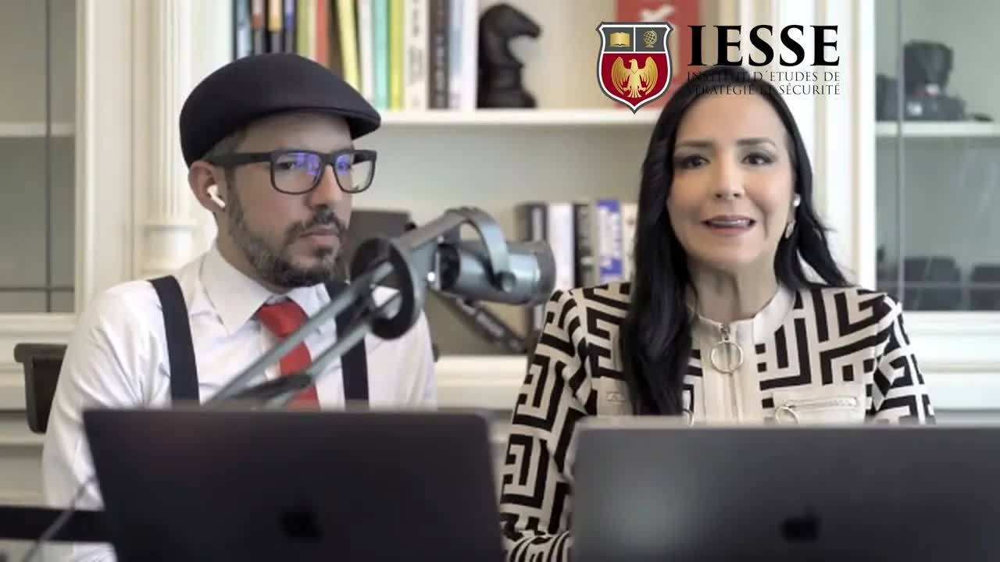
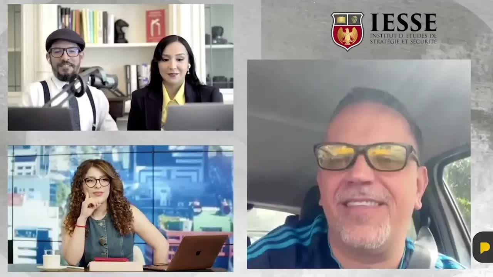
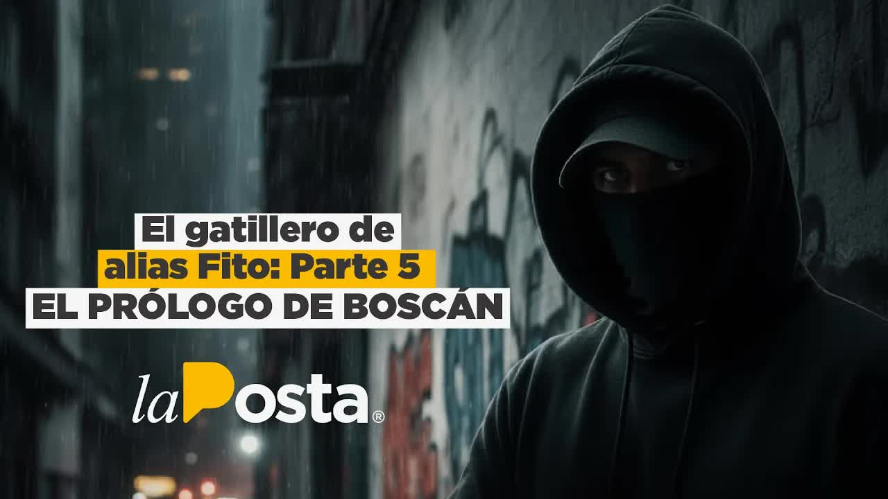
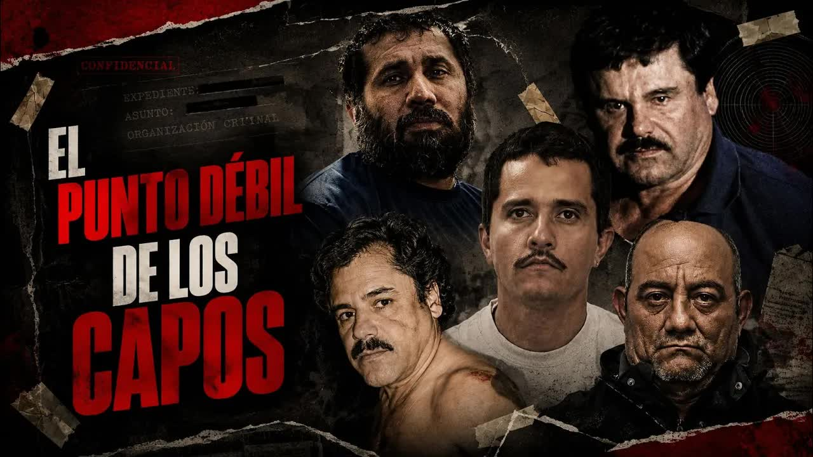
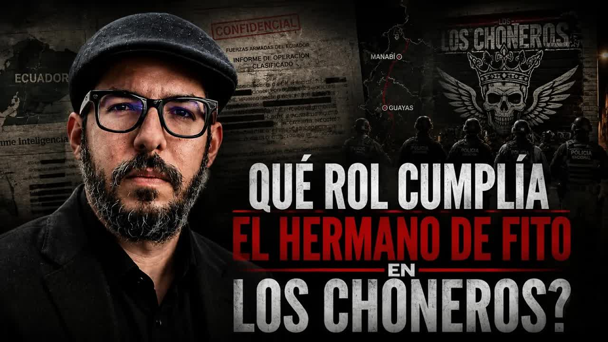
Material de la investigación
Lo que no entró en el relato
Lo que se dijo al aire
Las transcripciones
Detienen a seis familiares de alias Fito | La Ley que divide a la Asamblea
02/06/2025 · 17.342 palabraseso es que tenemos tan presente las puteadas, los silencios, la cerveza, la parrilla, la mirada de él puesta en la tele, la nuestra puesta en la mirada de él puesta en la tele. Y a veces como el sábado en Munich, Alemania, elespacio de la muerte y de la vida se vuelve realmente loco. Lo que pasa es que allí estaba Luis Enrique, el entrenador del Paris Saint-Germain, el tipo con cara de estatua que parece que no padec…
Leer la transcripción completaFito y su familia hicieron lo que les dio la gana con venia del poder
03/06/2025 · 460 palabrasEstado ecuatoriano, especialmente entre 2021 y 2023. vayan ustedes a saber por qué en esas épocas y quién dirigía el poder. Se sabía ya entonces que, por ejemplo, eh Iris limpieza eh que se dedicaba a la alimentación y a la limpieza o que la compañía Homabi, que se dedicaba a la carga pesada, ¿quién sabrá que habrán llevado los camiones? O que la compañía Queen Water, que se dedicaba a distribuir hielo y agua y le di…
Leer la transcripción completaAlias Fito: así fue su recaptura en Ecuador | ¿Qué pasará con Los Choneros?
26/06/2025 · 20.235 palabrasmayor, eh, Alias Esparta, puede ser, o España. Y y esta banda se llamaba Los Choneros. Era una banda que se dedicaba a a robar carros, ni siquiera carros en general, sino eh artículos de carros. tenía apenas 19 años cuando cayó preso la primera vez en el 2000, precisamente por esas mañas de andar robando accesorios de vehículos. 3 años pagó y luego a la calle por buena conducta, porque así es el Ecuador. Ya para ento…
Leer la transcripción completaLo que se viene tras la captura de Fito | Niños con sentencias de adultos
27/06/2025 · 20.708 palabras¿De dónde viene la fortuna de alias Fito? Del narco. Ay, no, genio. Vamos a darle un premio. ¿De dónde? No los voy a llevar hoy eh por el proceso de la importación e exportación de cocaína, que creo merece un capítulo aparte. Pero permítanme centrar eh este comentario en Alefito y cómo fue amasando su fortuna que se estima en varias decenas de millones de dólares según los registros policiales y las fuentes policiale…
Leer la transcripción completaAsí es la casa de lujo donde cayó Fito
30/06/2025 · 4.299 palabrasA ver, tenemos información de la casa donde agarraron a Adolfo Macías, a alias Fito. La Muni está trabajando ahora en uno de sus larguísimos hilos, muy documentados, eh, pero a mí no me gusta leer, entonces prefiero que me lo presenten aquí en el programa. ¿De acuerdo? A continuación, mi compañera. A continuación, mi compañera. A ver, estas son imágenes que se pertenecen a los distintos operativos que la policía naci…
Leer la transcripción completa¿Fito negoció para entregarse? El Gobierno responde | ¿Cómo será su extradición?
30/06/2025 · 21.792 palabras[ __ ] quería negociar con el Estado ecuatoriano. Sí, lo intentó. Se llevó finalmente la negociación. fue traicionado por las autoridades de la fuerza pública después de haber ganado su confianza. Fue esta una operación de la DEA. Es el resultado de una labor de inteligencia producto de las leyes recientemente aprobadas. Fue una serie de hechos que desencadenaron finalmente en su captura. Te cuento un poco …
Leer la transcripción completaFito HABLÓ con el Gobierno | Sentencian nuevamente a Jorge Glas
01/07/2025 · 23.640 palabrasprefectura de Pichincha. Espacios seguros para nuestros futuros campeones. Pichincha deporte. Prefectura de Pichincha. De parte de Daniel Novoa, de María José Pinto, de la Vinia Balbonesi, de Inés Manzano, de Anabela. Gracias Paola Cabezas. Así que tú, amigo de la floresta, te voy a explicar qué significan 25,000 barriles de crudo. Y bueno, Bidvin Badabang, el Machi no hace match con este acuerdo y la RC se ha puesto…
Leer la transcripción completaFito buscó a Colombia para negociar su entrega
02/07/2025 · 4.066 palabrasOkay. A ver, eh, tema del día hasta que se sume mi banco, igual va a ser el mismo tema. Eh, es la revelación que ha hecho noticias uno de los chats de Fito con el gobierno colombiano. Okay. Complicación para eh Petro, que además tiene muy caliente el tema en Colombia, muy caliente el tema. Están preocupadazos. Sí. Y yo creo que va a seguir saliendo información, ¿no? Así que sí va a ir a cuentagotas. El gobierno tiene…
Leer la transcripción completa¡Joyas y armas encaletadas en la casa de FITO! | Petro dice que no conoce a FITO
03/07/2025 · 23.030 palabrasmundialmente famosas e y que le encanta a los youtubers visitar, donde se los trata a los criminales como si no fueran seres humanos. se les tiene la luz prendida, se les da una comida de porquería, no se les deja tener visitas de ningún tipo, están ahí exhibidos todo al día, hay violaciones de derechos humanos, se les da palo y hoy los únicos que se mueren en El Salvador, le un reporte de esto ayer, son precisamente…
Leer la transcripción completaFito ya está en EE.UU. | ¿Qué le espera frente a la justicia gringa?
21/07/2025 · 18.240 palabrasquedarse abajo, como habían hecho en el plan, subió. Subió junto a un montón de gente al ala 3 y el ala cuatro del pabellón y en la parte de arriba hicieron trinchera. Encontraron balas y resistieron durante casi una hora mientras abajo prendían fuego el pabellón entero tras romper los muros. La policía que miraba cómodamente desde afuera, donde los oficiales a cargo habían pactado con alias Junior para recibir diner…
Leer la transcripción completaFito a EE.UU., ¿premio o castigo?
22/07/2025 · 2.484 palabrasQuiero empezar a poner para este panel de discusión usando mi rol aquí de ponedor de temas, eh el tema fito, ¿okay? Va a una cárcel que nos describen los gringos como violenta, eh unos fiscales que nos describen la prensa gringa como experimentados en eh llevar a cana a grandes capos, Carlos Quintero, Chapo Guzmán, entre otros. Y un abogado eh muy especializado en lograr buenos tratos privilegiados para narcotrafican…
Leer la transcripción completaEl sicario de alias Fito | EL PRÓLOGO DE BOSCÁN
30/10/2025 · 5.443 palabrasMe llamó un sicario. No sé por qué nunca tengo frases normales para empezar. Me llamó un sicario, no uno cualquiera. Era el gatillero principal de alias Fito, el más conocido, el más conocido de los narcotraficantes del Ecuador, hoy preso en los Estados Unidos. A este gatillero lo llamaban la muerte. me llamó mientras yo cocinaba una pasta matriciana un domingo cualquiera todavía de verano, porque tuve la estúpida id…
Leer la transcripción completaEl gatillero de alias Fito: Parte 4 | EL PRÓLOGO DE BOSCÁN
30/10/2025 · 1.673 palabrasromantizar el crimen y como esta es la sociedad del periodismo del miedo, donde todos están más pendientes de los comentarios que de lo que escriben, entonces nos censuramos antes de que nos censuren y no lo contamos nunca. Pero la verdad evidente, si se quiere, es que también ellos se enamoran. Eso incluye alias la muerte. Y si sigues este diario, sabes bien que esta es la cuarta de cinco entregas sobre su vida. La …
Leer la transcripción completaEl gatillero de alias Fito: Parte 5 | EL PRÓLOGO DE BOSCÁN
31/10/2025 · 1.660 palabras¿Pueden los malos dejar de ser malos? Yo yo creo genuinamente que no, que casi nunca. La muerte, el sicario de alias Fito, cuya vida llega a mis oídos a través de una llamada de una cárcel mexicana. Puede ser una prueba de ella. Esta es la quinta y última entrega si sigues este diario. 72 muertes después, cuando se aburrió de tatuarse a las víctimas, la muerte tuvo una mague de conciencia. Él lo cuenta más o menos as…
Leer la transcripción completaEl punto débil de los Capos que usaron para sus capturas
11/05/2026 · 1.182 palabraseventualmente lo convirtieron en doctrina. Para atrapar a un capo, no lo busques a él, busca a los que él no puede dejar de amar. Puedes robarle el teléfono, el alias, la ruta de escape. Puedes quitarle el nombre, la cara, el país. Al hijo que cumple años en diciembre, a la esposa con miedo en un barrio privado de Córdoba, a la hija de 3 años que duerme arriba mientras él está enterrado en un búnker debajo. A esos no…
Leer la transcripción completaCae el último cabecilla de los choneros, alias Javi
17/06/2026 · 14.460 palabrascon mi hija. Tenemos una relación, una [carraspeo] relación muy especial, pero dado que era un momento, padre, hija, pudimos aprovechar para preguntarnos cosas que antes no. Yo le conté, por ejemplo, eh de los insabores de la vida, de de los amigos que te traicionan, pero cómo por cada amigo que te traicionan hay 10 días que no lo hacen. Y aproveché para preguntarle cosas que no le había preguntado nunca. Por ejemplo…
Leer la transcripción completaQué rol cumplía el hermano de Fito en Los Choneros?
13/07/2026 · 891 palabrasDavid Alexander Masías Villamar, el hermano de alias Fito. La policía no lo consideraba un objetivo de alto valor hasta hace muy poquito. Ah, hasta hace muy poquito. Eh, y la mayoría de nosotros, los que nos dedicamos a reportar sobre crimen organizado, ni siquiera habíamos reparado demasiado en en su existencia. Yo había escuchado de él un par de cosas que estaba armando gente en siempre se va el nombre esta en Puer…
Leer la transcripción completaTranscripciones de los subtítulos automáticos de cada programa. No están corregidas a mano: sirven para buscar una frase y llegar al minuto exacto del video, no como cita textual literal.